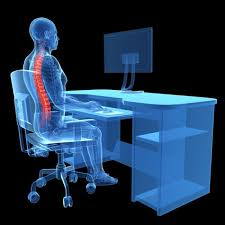
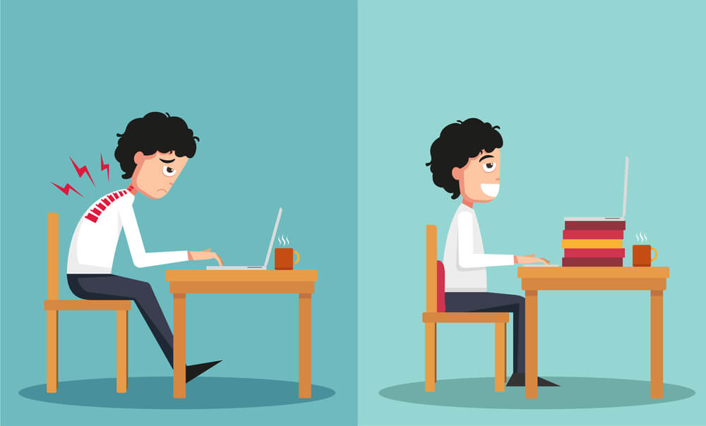

Fogalma
Az ergonómia egy tudomány, ami a számítógépes környezetet emberre vonatkozó egészségügyi vonatkozásait határozza meg,
azaz milyen legyen egy egészséges számítógépes környezet
Az egészséges munkakörnyezet
- tágas
- jól megvilágított jól szelőztethető
- megfelelő páratartalom
- a termet ne süsse egész nap a Nap
Az egészséges munkaeszköz
- a mai monitrorok már nem sugároznak, de régen a katódsugárcsöves monitorokhoz kellett egy sugárvédő,
amit a képernyőre kellett helyezni így az felfogta a káros sugarakat - zajos nyomtatót külön terembe kell tartani, mert idegesítő és megzavarja a munkát
- a lézeres nyomtató rákkeltő lehet a benne lévő por miatt
- ergonómukis egér, billentyűzet: kényelmes, kézhez igazított
- ergonómukis asztal és szék: állítható legyen mind kettő hisz az embereknek nem egyforma a testalkatuk
Az egészséges munkaidő
- kb. 60 percenként 10 perc szünetet kell tartani
- 6 óránál többet nem szabad számítógépezni egy nap
Környezetvédelmi szempont:
-

- Zöld PC: olyan számítógép, ami újrahasznosítható alkatrészekből készült
- Energiatakarékos mód használata, ha nem vagyunk a számítógép közelében
Szoftver ergonómia:
- megbízható
- könnyen kezelhető
- testre szabható
- felhasználóbarát
- továbbfejleszthető
Veszélyek:
- (ha nem ergonómukisak az eszközeink a munkakörnyezet)
- egér helytelen használta: ízületi fájdalmak
- ínhüvely gyulladás
- nem ergonómukis szék és asztal használata: gerincbántalmak derékfájás
- nem megfelelő világítás: szemkárosodás
- ha túl sokat számítógépezünk, felléphetnek stressz tünetek
- RSI-szindróma: repetitive stressz szindróma: ismétlődő stressz ártalom